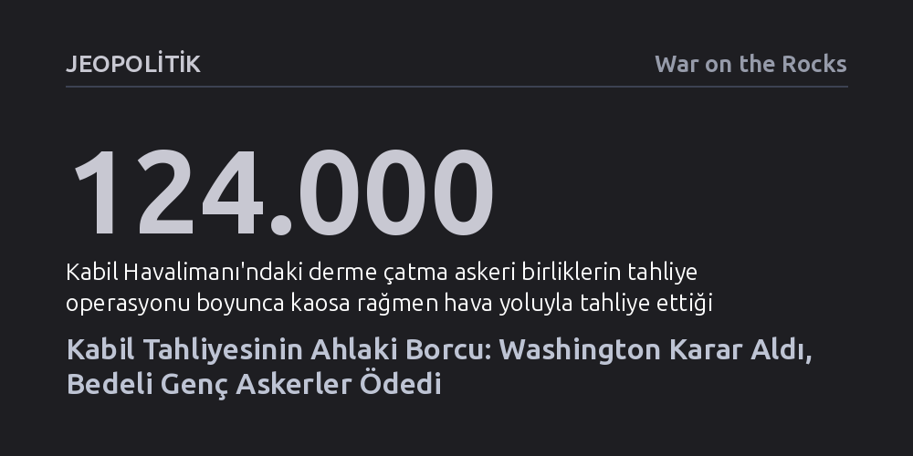

JEOPOLITIK · War on the Rocks · 2026-09-12
ABD'nin Kabil'den çekilme fiyaskosu, Washington'daki karar alıcıların kurumsal sorumluluktan kaçarak stratejik çöküşün ahlaki faturasını kapılardaki genç askerlerin sırtına yıktığını gösteriyor. Siyasi liderlerin hesap vermediği bu süreç, hem terk edilen Afgan müttefiklere hem de emirleri uygulayan askerlere ödenmemiş çift taraflı bir borç bıraktı.
Bu yazı, askeri yenilgi ve başarısız dış politikaların asıl yıkıcı bedelinin karar alan siyasi seçkinler yerine sahada emri uygulayan askerlerin vicdanına yüklendiğini göstererek demokratik hesap verebilirlik anlayışını kökten sorgulatıyor.

15 Ağustos 2021 gecesi Hamid Karzai Uluslararası Havalimanı'nda başlayan tahliye, 11 Eylül saldırıları gerçekleştiğinde henüz dünyada olmayan ya da çocuk yaştaki gencecik bir asker kuşağının omuzlarına yıkıldı. Başlatılmasında hiçbir payı bulunmayan yirmi yıllık bir savaşın nihai çöküşünü göğüslemek zorunda bırakılan bu askerler, binlerce çaresiz insanın akın ettiği tellerin önünde tarihin en büyük sivil tahliyesini gerçekleştirmeye çalıştı. Okyanus ötesinde alınmış stratejik kararların faturası sahadaki bu gençlerin yüzüne çarptı; kucağındaki cansız bebeği bir deniz piyadesinin göğsüne bastıran Afgan bir annenin "Bunu sen yaptın" feryadı, siyasi başarısızlığın sahadaki en savunmasız yüze yöneltilmesinden ibaretti.
Havalimanındaki kargaşa saatler içinde tırmanırken, sahadaki askerlerin elinde öfkeli ve dehşet içindeki kalabalığı kontrol edebilmek için yalnızca aldıkları temel askeri disiplin ve kişisel vicdanları vardı. Makineli tüfeklerin atış ritmini ezbere bilen deniz piyadeleri, yüzlerine birkaç santim mesafeden ağlayarak yalvaran sivillere ve jiletli tellerin üzerinden uzatılan bebeklere karşı ne yapacaklarını hiçbir talimnamede bulamadı. İki hafta boyunca günde sadece ikişer saat uyuyarak, olup biteni telefonlarındaki haberlerden takip etmeye çalışan bu gençler, en kanlı intihar saldırısında silah arkadaşlarını kaybettikten sonra bile görev yerlerini terk etmedi.
Kabil’in çöküşü sahada aniden beliren taktiksel bir sürpriz değil, Washington ve Doha’daki karar vericilerin yıllara yayılan basiretsizliğinin kaçınılmaz sonucuydu. İflas süreci, Trump yönetiminin Afgan hükümetini tamamen masanın dışına iterek Taliban ile imzaladığı Doha Anlaşması ve Kabil'e baskı kurarak serbest bıraktırdığı beş bin militanla hız kazandı. Bagram Hava Üssü'nün boşaltılmasıyla salıverilen bu mahkumlar evlerine dönmek yerine doğrudan cepheye koştu ve Afgan ordusunun lojistik omurgasını çökertti.
Görevi devralan Biden yönetimi ise felaketi durdurabilecek askeri uyarıları görmezden geldi. Genelkurmay Başkanı ve Merkez Kuvvetler Komutanı’nın sahada en az 2.500 asker tutulması yönündeki açık tavsiyeleri hiçe sayıldı; başkentin hızla düşeceğine dair istihbarat raporları dikkate alınmadı. Dışişleri Bakanlığı'nın çekilme sonrası hazırladığı resmi rapor da lider kadronun en kötü senaryoları etraflıca değerlendirmediğini ve tahliye idaresinde büyük bir yetki kargaşası yaşandığını belgeledi. Kararlar klimalı ofislerde, riskten tamamen yalıtılmış bürokratlarca alındı; bedeli ise havalimanı kapısına sıkışan birliklere yüklendi.
Kabil'de görev yapan personelin maruz kaldığı travma, bilinen muharebe stresinin ötesinde, psikiyatride ahlaki yaralanma olarak adlandırılan derin bir vicdani tahribattı. Ahlaki yaralanma, kişinin doğrudan zarar görmesinden ziyade, kendi ahlaki ilkelerine ve inandığı değerlere taban tabana zıt eylemleri yapmaya ya da bunlara alet olmaya zorlanmasıyla ortaya çıkar. ABD, yirmi yıl boyunca kendisine tercümanlık yapan, hayatını riske atan yerel müttefiklerine onları koruyacağı sözünü vermişti. Ancak havalimanı nizamiyelerinde kurulan düzen, bu sözün bizzat üniforma giyen gençlerin eliyle bozulmasını zorunlu kıldı.
Sadakat ve onur kültürüyle yetiştirilmiş askerler, hayatlarını kurtarmak için tel örgülere koşan masum insanları elleriyle itmek ve onları Taliban'ın insafına terk etmekle görevlendirildi. Sistematik çelişki tam da bu noktadaydı: Askerlerden bir yandan olağanüstü bir soğukkanlılık ve itidal sergilemeleri beklenirken, diğer yandan vicdanen affedilemez olan bir terk edişin canlı barikatı olmaları emredildi.
Askeri hiyerarşide en alt kademedeki bir manga komutanı dahi birliğinin her eyleminden koşulsuz sorumlu tutulurken, Washington’daki üst düzey yetkililerin mutlak bir cezasızlık zırhına sığınması demokratik hesap verebilirlik ilkesini sakatladı. Tarih benzer bir acıyı 1983 Beyrut kışla bombalamasında da yaşamıştı. 241 askerin hayatını kaybettiği o felaketin ardından Başkan Ronald Reagan sorumluluğun doğrudan kendi makamına ait olduğunu kamuoyuna açıklamış, ordu bu dersler üzerinden ne zaman ve nasıl güç kullanacağına dair Powell Doktrini gibi temel çerçeveler geliştirmişti.
Oysa Kabil fiyaskosunun ardından hiçbir Amerikan lideri kurumsal sorumluluğu üstlenmedi. Nitekim Hollanda Dışişleri Bakanı Sigrid Kaag, Kabil tahliyesindeki aksaklıklar sebebiyle parlamento kınaması alınca derhal istifa ederek sorumluluk etiğinin gereğini yerine getirmişti. Washington'da ise ne sivil bürokrasiden ne de askeri komuta kademesinden tek bir istifa dahi gelmedi; Kongre'nin kurduğu araştırma komisyonunun raporu ise sürekli ertelenerek siyasi yüzleşme zamana yayıldı.
Aradan geçen yıllara rağmen Amerikan devleti iki temel borcunu kapatmaktan kaçınıyor. İlki, sahada canlarını Amerikan askerleri için tehlikeye atan ve vizeleri dondurulduğu için halen ölüm tehdidi altında bekleyen on binlerce Afgan müttefike olan vefa borcudur. Kongre'nin daimi yasal statü sağlayacak yasa tasarılarını rafa kaldırması ve yönetimlerin vize yollarını kapatması, verilen sözlerin kurumsal olarak inkâr edilmesi anlamına geliyor.
İkinci borç ise bu trajediyi göğüsleyen askerlere aittir. Savunma ve Gaziler Bakanlıkları, Kabil'de görev alan personeli proaktif biçimde tespit edip ahlaki yaralanma taramasından geçirmek ve bu kolektif yükü sırtlanmak yerine, onları yıllar süren bireysel tazminat bürokrasisine terk ediyor. Kendi başarısızlıklarının ahlaki faturasını genç evlatlarının vicdanına yıkan ve müttefiklerini unutan bir demokrasi, yalnızca geçmişine ihanet etmekle kalmaz; yarın yeni bir kriz kapısında görevlendireceği nesillerin inancını da yok eder.